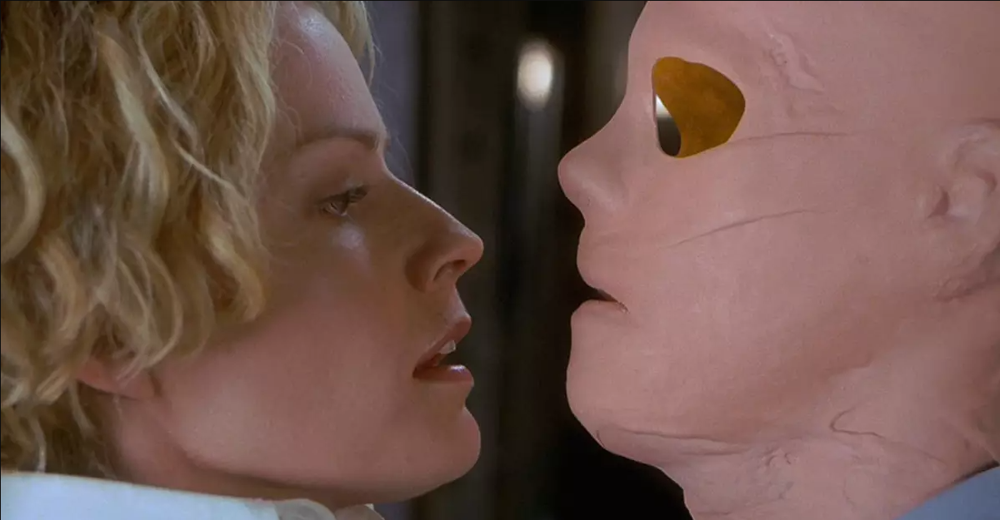

Resumo do Filme
Um laboratório militar ultrassecreto, um grupo de cientistas descobre a fórmula da invisibilidade. Ansioso por analisar os efeitos em um ser humano, o líder da equipe, Sebastian Craine, testa em si mesmo. Entretanto, a equipe ainda não tinha descoberto o antídoto para a fórmula e precisa encontrar algo que impeça o cada vez mais rápido processo de invisibilidade pelo qual passa o corpo de Craine. Aos poucos a intoxicação o afeta e ele comece a acreditar que seus colegas são uma ameaça.